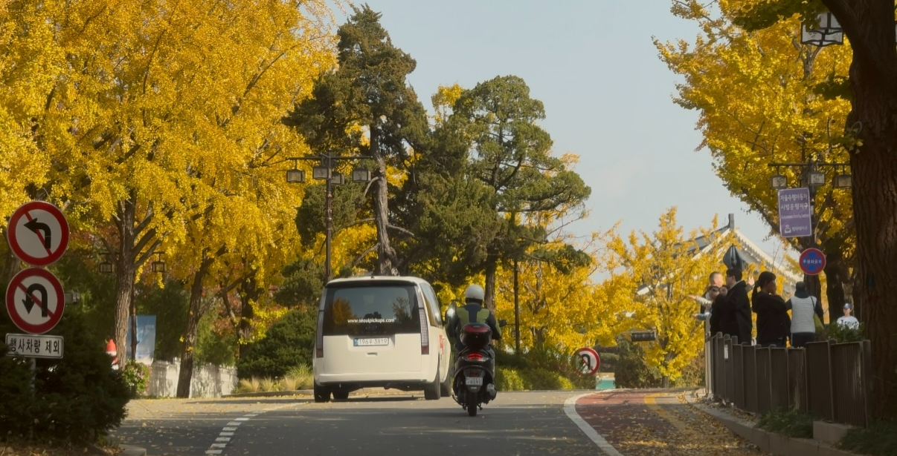
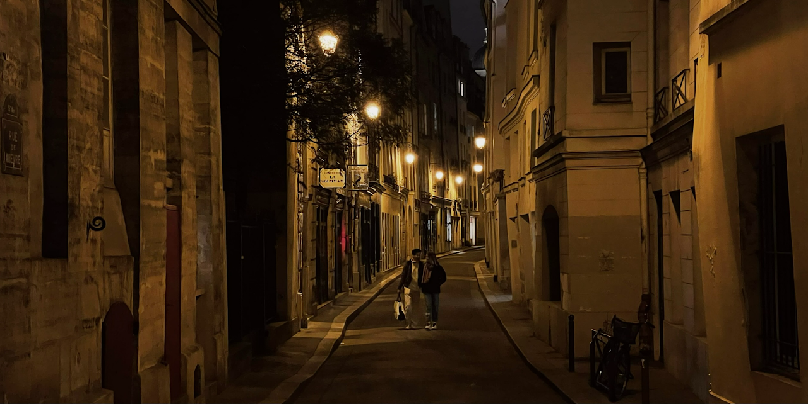
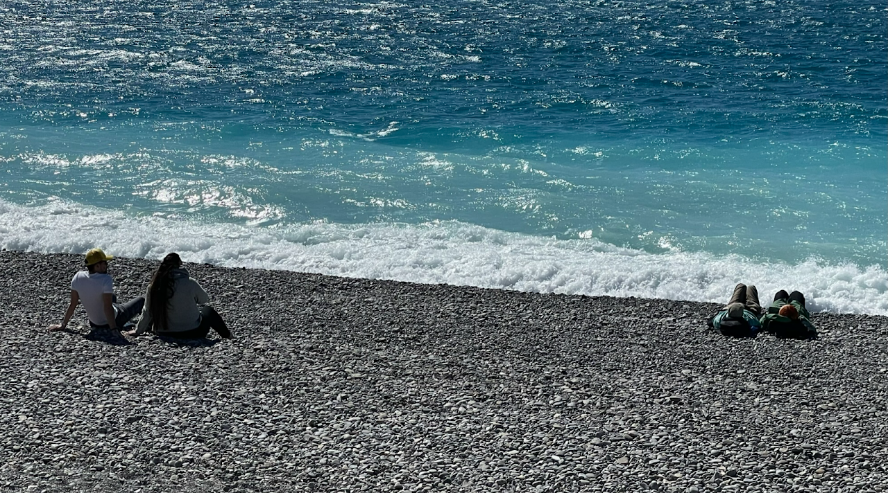

취미생활
취향 · 철학 · 건강
1) 취향과 철학
삶의 즐거움을 위하여 취향과 철학을 가꾸고자 노력하고 있습니다. 커피, 음악, 공간, 책, 운동, 맑은 하늘을 좋아합니다.
2) 정신건강과 웰니스
정신건강을 챙기는 행복한 삶을 지향합니다. 운동은 주5일 합니다. 러닝, 축구, 필라테스, 웨이트 등 가리지 않고 꾸준히 하고 있습니다. 수면, 식사 등 웰니스에도 관심이 많습니다.
햇살 좋은 광장에서 오후 2시에 커피를 한 잔 하고, 한강에서 노을을 보면서 노을지기 전의 햇살을 캐치하는 여유로운 마음으로 하루를 마무리하는 가을방학 같은 삶을 꿈꾸고 있습니다.
3) 공간, 사진, 영상, 음악
도시 곳곳을 돌아다니며 공간을 탐방합니다. 사진과 영상을 남기는 것을 좋아합니다. 영화는 주로 드라마 장르를 좋아합니다. 옷 입는 것에도 약간 관심이 있으며, 주로 올블랙을 선호합니다.
그루브 있는 음악이라면 록, 전자음악, 재즈, R&B, 인디 등 가리지 않고 좋아하며, 매년 록 페스티벌을 즐기는 편입니다. 이전에 밴드 활동하며 베이스기타 연주를 했었습니다.
좋아하는 음악
- Electronic / French touch / Minimal / Synth-based — Kraftwerk, Dabeull, Breakbot, Air, Paradis, FKJ, Polo & Pan, L’Impératrice
- Funk / Groove-based Indie / Nu-disco / Neo-soul — Vulfpeck, Jungle, Parcels, Papooz, Leisure, Tom Misch, Men I Trust, Rhye, The Internet, Benny Sings
- Alternative / Rock / Funk-rock — Oasis, Liam Gallagher, Beck, Red Hot Chili Peppers
- Korean Indie / Urban / Session-oriented Korean Music — 구남과여라이딩스텔라, 새소년, 김사월, wave to earth, 조정현, 김현식, 빛과 소금, The Black Skirts, 혁오, ADOY, 한로로, 까데호, 지소쿠리클럽, 다섯, 전진희, 이설아, 김일두, 사뮈 등 다수
- Jazz / Contemporary Jazz / Jazz-fusion — Keith Jarrett, Pat Metheny Group, Brad Mehldau, Esbjörn Svensson Trio, Bill Evans
4) 사회 변화에 대한 기여
사회 변화에 기여할 수 있는 삶을 살려고 합니다. 저는 서로를 돌보고, 도전을 장려하며, 실패하더라도 감당할 수 있는 기반을 가진 지속가능한 공동체가 필요하다고 생각합니다. 자살률, 합계출산율, 산업재해 사망자 수와 같은 지표는 우리 사회의 구조적 문제를 보여주며, 사회적 결정요인(social determinants)과 깊이 연결되어 있습니다. 앞으로 사회적 불평등을 완화하여 더 행복하고 안전하며 지속가능한 사회를 만드는 데 기여하는 삶을 살아가고자 노력하고자 합니다.
갤러리


